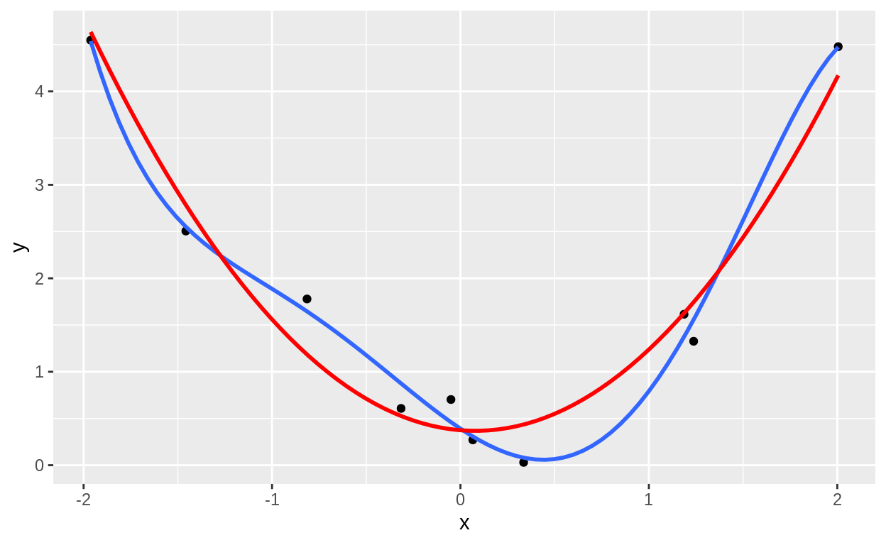
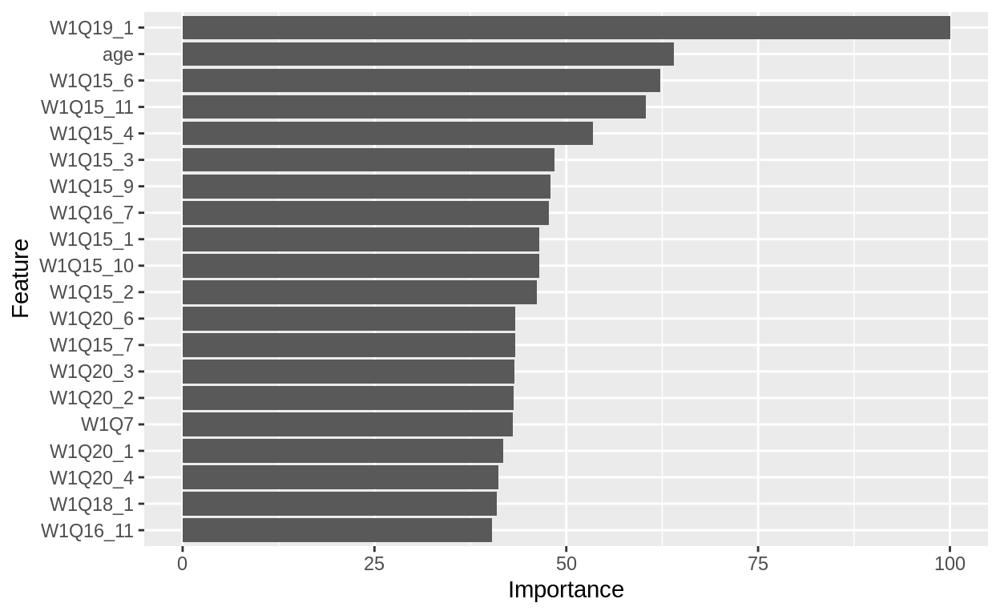

Table of Contents
はじめに
前回は機械学習の中でも教師付き学習の分類について、いくつかの手法を見てきました。 今回は発展的なトピックをいくつか取り上げたいと思います。
必要なパッケージの読み込み
前回同様、tidyverseとcaretを使います。
library(tidyverse)
Registered S3 methods overwritten by 'ggplot2':
method from
[.quosures rlang
c.quosures rlang
print.quosures rlang
Registered S3 method overwritten by 'rvest':
method from
read_xml.response xml2
── Attaching packages ──────────────────────────────────────────────────────────────────────────────────────────────────── tidyverse 1.2.1 ──
✔ ggplot2 3.1.1 ✔ purrr 0.3.2
✔ tibble 2.1.1 ✔ dplyr 0.8.0.1
✔ tidyr 0.8.3 ✔ stringr 1.4.0
✔ readr 1.3.1 ✔ forcats 0.4.0
── Conflicts ─────────────────────────────────────────────────────────────────────────────────────────────────────── tidyverse_conflicts() ──
✖ dplyr::filter() masks stats::filter()
✖ dplyr::lag() masks stats::lag()
library(caret)
Loading required package: lattice
Attaching package: 'caret'
The following object is masked from 'package:purrr':
lift必要なデータの読み込みと下ごしらえ
例のごとく、東大・朝日共同調査の2014年衆院選・2016年参院選世論調査のデータを使います。
- 各コードで何をしているのかは前回を参照してください。
data <- read_csv("http://www.masaki.j.u-tokyo.ac.jp/utas/2014_2016UTASV20161004.csv",
locale = locale(encoding = "shift-jis"), na = c("66", "99", "999"))%>%
select(vote = W1Q1,
party = W1Q2,
sex = W1F1,
age = W1F2,
educ = W1F3,
job = W1F4,
W1Q7, W1Q8, W1Q9, W1Q10, W1Q11, W1Q12, W1Q13, W1Q14_1,
W1Q15_1, W1Q15_2, W1Q15_3, W1Q15_4, W1Q15_5, W1Q15_6,
W1Q15_7, W1Q15_8, W1Q15_9, W1Q15_10, W1Q15_11,
W1Q16_1, W1Q16_2, W1Q16_3, W1Q16_4, W1Q16_5, W1Q16_6,
W1Q16_7, W1Q16_8, W1Q16_9, W1Q16_10, W1Q16_11,
W1Q16_12, W1Q16_13, W1Q16_14, W1Q16_15, W1Q16_16, W1Q16_17,
W1Q17_1, W1Q17_2, W1Q17_3, W1Q17_4, W1Q17_5, W1Q17_6,
W1Q17_7, W1Q17_8, W1Q17_9, W1Q17_10,
W1Q18_1, W1Q19_1,
W1Q20_1, W1Q20_2, W1Q20_3, W1Q20_4, W1Q20_5, W1Q20_6, W1Q20_7)%>%
mutate(vote = vote - 1,
vote = as.factor(vote),
party = as.factor(party),
sex = as.factor(sex),
educ = as.factor(educ),
job = as.factor(job)) %>%
select(-party) %>%
rename(target = vote) %>%
drop_na()
Parsed with column specification:
cols(
.default = col_character(),
ID = col_double(),
PREFEC = col_double(),
HRDIST = col_double(),
W1Q1 = col_double(),
W1Q2 = col_double(),
W1Q3 = col_double(),
W1Q4 = col_double(),
W1Q5_1 = col_double(),
W1Q5_2 = col_double(),
W1Q5_3 = col_double(),
W1Q6 = col_double(),
W1Q7 = col_double(),
W1Q8 = col_double(),
W1Q9 = col_double(),
W1Q10 = col_double(),
W1Q11 = col_double(),
W1Q12 = col_double(),
W1Q13 = col_double(),
W1Q14_1 = col_double(),
W1Q14_2_1 = col_double()
# ... with 56 more columns
)
See spec(...) for full column specifications.
Warning: 8 parsing failures.
row col expected actual file
1810 PREFEC a double -- 'http://www.masaki.j.u-tokyo.ac.jp/utas/2014_2016UTASV20161004.csv'
1810 HRDIST a double -- 'http://www.masaki.j.u-tokyo.ac.jp/utas/2014_2016UTASV20161004.csv'
1811 PREFEC a double -- 'http://www.masaki.j.u-tokyo.ac.jp/utas/2014_2016UTASV20161004.csv'
1811 HRDIST a double -- 'http://www.masaki.j.u-tokyo.ac.jp/utas/2014_2016UTASV20161004.csv'
1812 PREFEC a double -- 'http://www.masaki.j.u-tokyo.ac.jp/utas/2014_2016UTASV20161004.csv'
.... ...... ........ ...... ...................................................................
See problems(...) for more details.今回は、投票するかどうかを予測するデータセットのみを使います。
シード値の設定
いくつかの分析手法では乱数を用います。 その名の通り乱数は毎回違う値が出てくるので、分析結果も変わってきます。
そこで、乱数を発生させるときの基準となるシード値を設定することで、毎回同じ乱数が発生するようにします。
set.seed(334)過学習
前回、ランダムフォレストで投票行動がほぼ100%の確率で的中できることが分かりました。 しかし、実はあの予測精度にはからくりがあったのです。
我々が予測したいのは、大抵の場合、「未知」のデータに対してです。 しかし、前回は学習に使った「既知」のデータに対して予測をしていました。
その結果、どのような問題が生じるのかを確認します。
そこで、学習に使う訓練データ(training set)と予測に使う検証データ(test set)にデータを分割してみます。 caretではcreateDataPartition()で設定した割合にデータを分割します。 実際には観察のインデックスが返ってくるので、それによって訓練データを選択し、-をつけてそれ以外を検証データとして選択します。
ind_train <- createDataPartition(y = data$target, p = 0.75,list = FALSE)
data_train <- data[ind_train,]
data_test <- data[-ind_train,]それぞれで、投票に参加した人の割合を計算ます。 つまり、全員投票に行くと予測したときの的中率で、ここからどれだけ改善されるかが重要になります。
mean(data_train$target == 1)
[1] 0.7238205
mean(data_test$target == 1)
[1] 0.7231834概ね、どちらも72%であること、訓練データと検証データで偏りがないことがわかります。
そして、訓練データのみを用いてランダムフォレストで学習し、訓練データと検証データのそれぞれで予測を行います。
vote_rf1 <- train(
target ~ .,
data = data_train,
method = "rf"
)
train_rf1 <- confusionMatrix(predict(vote_rf1, data_train), data_train$target)
test_rf1 <- confusionMatrix(predict(vote_rf1, data_test), data_test$target)
print(str_c("Accuracy (train):", train_rf1$overall[1]))
[1] "Accuracy (train):1"
print(str_c("Accuracy (test) :", test_rf1$overall[1]))
[1] "Accuracy (test) :0.73356401384083"学習に使った訓練データでは、前回と同様に100%の予測精度を叩き出しましたが、検証データでは（全員、投票に行くと予測する）ベースラインの72%よりも1%高いだけです。
このように、訓練データを学習しすぎることで未知のデータに対する予測精度を落としてしまうことを過学習、過剰適合(overfitting)と呼びます。 逆に、未知のデータに対する予測能力のことを汎化性能と呼んだりもします。
バイアス・バリアンス・トレードオフ
過学習と汎化性能の問題はバイアス・バリアンス・トレードオフと呼ばれることもあります。 ここで言うバイアスとは予測と観測値のズレで、バリアンスとはモデルの複雑さを意味します。 つまり、予測と観測値のズレをなくそうとするとモデルが複雑になり、翻って過学習してしまうということになります。
例えば、以下のグラフでは\(y = x^2 + \varepsilon\)という関係を前提としたシミュレーションデータになります。 青い線はそれを5次の多項式でフィットさせたもので、赤い線は2次の多項式でフィットさせたものになります。 青いほうがモデルが複雑でバイアスは小さいですが、予測値の変動、すなわちバリアンスが大きくなってしまいます。
n <- 10
tibble(x = rnorm(n, 0, 1),
y = x^2 + rnorm(n, 0, 0.5)) %>%
ggplot(aes(x = x, y = y)) +
geom_point() +
geom_smooth(method = "lm", formula = y ~ poly(x,5), se = FALSE) +
geom_smooth(method = "lm", formula = y ~ poly(x,2), se = FALSE, colour = "red")
特徴量エンジニアリング
つまり、機械学習による予測における課題とは、以下にして訓練データに過学習することなく、検証データや未知のデータに対する汎化性能を高めるのか、という点にあります。 そのための方法として、予測に用いる特徴量を適切に設定すること、いわゆる特徴量エンジニアリングが挙げられます。
特徴選択
前回は特徴量を増やすことで予測精度を高めましたが、特徴量を増やせばいいというわけでもありません。 特徴量が増えれば増えるほど、訓練データに過学習しやすくなります。
最も有効な方法はドメイン知識（予測対象に関する実質的な知識）を踏まえて、予測に有効な特徴量を選択することです。 しかし、今回は別の方法で特徴選択を行ってみます。
まず、caretのvarImp()という関数によって特徴量の重要性を求めることができます。 それをplot()ないし、ggplot()に入れることで重要性を可視化することができます。
vote_rf1 %>%
varImp() %>%
ggplot(top = 20)
グラフには現れてきませんが、重要性の低い変数を見ると性別や学歴、職業などが見つかります。 そこで、この3つの変数を除外して再びランダムフォレストで学習してみます。
vote_rf2 <- train(
target ~ .,
data = data_train %>%
select(-sex, -educ, -job),
method = "rf"
)
train_rf2 <- confusionMatrix(predict(vote_rf2, data_train), data_train$target)
test_rf2 <- confusionMatrix(predict(vote_rf2, data_test), data_test$target)
print(str_c("Accuracy (train):", train_rf2$overall[1]))
[1] "Accuracy (train):1"
print(str_c("Accuracy (test) :", test_rf2$overall[1]))
[1] "Accuracy (test) :0.730103806228374"若干ではあるものの、予測精度が改善しました。 ポイントとしては、
- 特徴量は多ければいいというわけではないということ、
- ドメイン知識に基づく特徴選択が有効な方法であるということ
です。
次元削減・特徴抽出
機械学習による変数の削除は次元削減あるいは特徴抽出と呼ばれます。 代表的な手法として主成分分析(principal component analysis)というものがあります。
アイデアとしては、多くの変数は実はより少ない変数によって簡単に表現できるのだと仮定して、そのより少ない変数を見つける、というものです。 例えば、今回のデータセットには59個の特徴量がありますが、実は10個の目には見えない特徴量によって要約できるのだとします。
主成分分析はcaretではpreProcess()においてmthod = "pca"によって訓練データで学習します。 pcaCompで主成分の数を指定します。
pca <- preProcess(data_train, method = "pca", pcaComp = 10)学習した主成分分析を使って、訓練データと検証データから主成分を予測します。 連続変数が10の主成分に要約されます。
data_train_pca <- predict(pca, data_train)
data_test_pca <- predict(pca, data_test)
data_train_pca %>%
head()
target sex educ job PC1 PC2 PC3 PC4 PC5 PC6 PC7
1 1 1 3 1 3.809366 0.1801622 -1.8379175 1.2456616 3.37083354 -1.9954919 1.8952302
2 1 2 4 3 -3.173918 1.5927561 -4.2498731 -1.1659160 1.24572074 0.3924708 -1.0146396
3 0 2 3 9 -2.461764 -0.8606923 -0.9490860 -0.7284149 1.25468156 0.5699500 0.7214223
4 0 1 3 1 1.957257 -1.9504894 0.5070019 -0.1784074 0.70948594 0.7019040 1.0983351
5 0 2 2 1 -3.660955 -1.6967464 2.0856792 -0.2048313 1.77887958 0.3399005 -0.5197844
6 0 2 3 5 -6.686003 -1.1631333 1.1502940 -0.4326285 -0.07474275 -0.9357342 0.4035839
PC8 PC9 PC10
1 0.4845694 -1.5629032 1.7078777
2 -0.4276871 -0.2923143 -0.9699847
3 -1.1403454 1.3405139 1.3784887
4 0.6770817 -0.6356769 1.2531474
5 -1.1663747 -0.3285038 0.3593411
6 -0.2958043 -0.4433927 -0.717624010個の主成分を用いてランダムフォレストで学習をします。
vote_rf3 <- train(
target ~ .,
data = data_train_pca %>%
select(-sex, -educ, -job),
method = "rf"
)
train_rf3 <- confusionMatrix(predict(vote_rf3, data_train_pca), data_train_pca$target)
test_rf3 <- confusionMatrix(predict(vote_rf3, data_test_pca), data_test_pca$target)
print(str_c("Accuracy (train):", train_rf3$overall[1]))
[1] "Accuracy (train):1"
print(str_c("Accuracy (test) :", test_rf3$overall[1]))
[1] "Accuracy (test) :0.750865051903114"今回も若干ではありますが予測精度が改善しました。 ただし、主成分分析は機械学習によって主成分を求めるので、それが一体何を意味しているのかは解釈しないといけないという欠点があります。 やはり、まずはドメイン知識に基づく特徴選択が第1の方法のように思えます。
正則化
正則化あるいはshrinkageによって学習と特徴抽出を同時に行うこともできます。 具体的には、LASSO, Ridge, Elastic Netといった手法があります。
直観的に言えば、これらの手法では、回帰分析をする際に、効果が大きな変数に対しては効果が小さくなるような制約がかけられています。 そのため、「罰則付き回帰」と呼ばれることもあります。
罰則がつくことによって、
- いらない変数の効果が0になりやすくなる(LASSO)
- 訓練データに対する過学習が抑えられる(Ridge)
といったご利益が期待されます（Elastic Netはその中間）。
caretでは正則化ロジスティック回帰の場合はmethodをglmnetにします。
vote_logit1 <- train(
target ~ .,
data = data_train,
method = "glmnet"
)
train_logit1 <- confusionMatrix(predict(vote_logit1, data_train), data_train$target)
test_logit1 <- confusionMatrix(predict(vote_logit1, data_test), data_test$target)
print(str_c("Accuracy (train):", train_logit1$overall[1]))
[1] "Accuracy (train):0.74108170310702"
print(str_c("Accuracy (test) :", test_logit1$overall[1]))
[1] "Accuracy (test) :0.709342560553633"残念ながら、今回の例では予測精度は下がってしまいました。
交差検証
このように、機械学習ではモデル選択や特徴量エンジニアリングにおいて人間が判断する余地が大きいです。 したがって、いろいろなモデルや特徴量で機械学習を行い、よりよいものを見つけていくことが必要になります。
そこで問題となるのは、検証データに過学習してしまう可能性です。 つまり、モデルAとモデルBの予測精度を検証データによって求め、より高い方を選択する、という工程を繰り返すことで、検証データに都合のいいモデルが選ばれてしまうかもしれません。
この問題に対処するための方法が交差検証(cross validation: CV)と呼ばれるものです。 ここでは、その中でもK-fold CVについて説明をします。

まず、データをK個に分割します。 そして、1番目のデータを検証データ、それ以外を訓練データとして学習をします。 その後、最初のデータを使って予測精度を求めます。 次のステップでは2番目のデータを検証データ、それ以外を訓練データとして学習と検証を行います。 これをK回繰り返して予測精度の平均値を求めます。
こうすることで、訓練データの中に擬似的な検証データを作ることができ、検証データに過学習することがなくなります。
caretではtrain()内でtrControl = trainControl(method = "cv")とすると、CVを行います。 分析結果のオブジェクト（今回の例ではvote_logit2）の中に学習内容が書いてあります。 10-fold CVが行われていたことがわかります。
vote_logit2 <- train(
target ~ .,
data = data_train,
method = "glmnet",
trControl = trainControl(method = "cv")
)
vote_logit2
glmnet
869 samples
59 predictor
2 classes: '0', '1'
No pre-processing
Resampling: Cross-Validated (10 fold)
Summary of sample sizes: 782, 782, 782, 783, 782, 782, ...
Resampling results across tuning parameters:
alpha lambda Accuracy Kappa
0.10 0.0002037132 0.7064689 0.16009175
0.10 0.0020371323 0.7053328 0.15033014
0.10 0.0203713235 0.7145282 0.14463903
0.55 0.0002037132 0.7064822 0.15725609
0.55 0.0020371323 0.7053194 0.14255749
0.55 0.0203713235 0.7318498 0.14233046
1.00 0.0002037132 0.7064822 0.15725609
1.00 0.0020371323 0.7053194 0.14013555
1.00 0.0203713235 0.7329992 0.09327543
Accuracy was used to select the optimal model using the largest value.
The final values used for the model were alpha = 1 and lambda = 0.02037132.いろいろよくわからない数字が出ていますが、それは10回求めた予測精度ではありません。 実は、これはハイパーパラメータと呼ばれるものになります。
ハイパーパラメータのチューニング
いくつかの機械学習では自動的に推定されず、人間の手で決めなければならないパラメータがあり、それらをハイパーパラメータと呼びます。 そして、ハイパーパラメータのチューニングもモデル選択や特徴量エンジニアリングと同様、検証データに過学習を起こし得ます。
実は、caretでは自動でハイパーパラメータのチューニングを行ってくれるのですが、その際の予測精度を求める方法が10-fold CVだったわけです。 つまり、alphaとlambdaというハイパーパラメータについていくつかの組み合わせに関して10-fold CVを行い、予測精度の平均値を求め、それが最も高い組み合わせを採用しているのです。 学習結果の最後に、The final values used for the model were ...と書いてあるのがわかります。
さて、ハイパーパラメータの範囲は自分で決めることができます。 例えば、デフォルトでは上記のように各ハイパーパラメータの値が3つずつ選ばれていますが、5ずつにすることもできます。
vote_logit3 <- train(
target ~ .,
data = data_train,
method = "glmnet",
trControl = trainControl(method = "cv"),
tuneLength = 5
)
vote_logit3
glmnet
869 samples
59 predictor
2 classes: '0', '1'
No pre-processing
Resampling: Cross-Validated (10 fold)
Summary of sample sizes: 782, 782, 782, 782, 783, 782, ...
Resampling results across tuning parameters:
alpha lambda Accuracy Kappa
0.100 9.455529e-05 0.7077386 0.174875772
0.100 4.388868e-04 0.7077386 0.174875772
0.100 2.037132e-03 0.7065891 0.170266815
0.100 9.455530e-03 0.7112002 0.171303891
0.100 4.388868e-02 0.7238305 0.137092038
0.325 9.455529e-05 0.7077386 0.174875772
0.325 4.388868e-04 0.7077386 0.174875772
0.325 2.037132e-03 0.7054397 0.165873805
0.325 9.455530e-03 0.7100374 0.154127146
0.325 4.388868e-02 0.7295777 0.087085958
0.550 9.455529e-05 0.7077386 0.174875772
0.550 4.388868e-04 0.7065891 0.170331813
0.550 2.037132e-03 0.7088880 0.172072222
0.550 9.455530e-03 0.7100241 0.141632401
0.550 4.388868e-02 0.7295777 0.052252876
0.775 9.455529e-05 0.7054264 0.168181217
0.775 4.388868e-04 0.7065891 0.170331813
0.775 2.037132e-03 0.7077252 0.167817729
0.775 9.455530e-03 0.7192462 0.152655088
0.775 4.388868e-02 0.7238172 0.003601108
1.000 9.455529e-05 0.7054264 0.168181217
1.000 4.388868e-04 0.7065891 0.170331813
1.000 2.037132e-03 0.7077386 0.165622932
1.000 9.455530e-03 0.7238305 0.157213125
1.000 4.388868e-02 0.7238172 0.000000000
Accuracy was used to select the optimal model using the largest value.
The final values used for the model were alpha = 0.325 and lambda = 0.04388868.さらに、学習結果をplot()あるいはggplot()に入れると、ハイパーパラメータと予測精度の関係が可視化されます。
ggplot(vote_logit3)
結果を理解するために、もう少し正則化について解説をします。 Mixing Percentageとはalphaのことで、0であればRidgeになり、1であればLASSOに、0から1の間の場合はElastic Netになります。 一方、Regularization Parameterとはlambdaのことで、罰則の強さを意味します。 罰則が0であればロジスティック回帰と同じですが、大きくなるに連れて正則化の効果が大きくなります。
caretではtuneGridのオプションを使うことで、自らハイパーパラメータの値を設定することができます。
vote_logit4 <- train(
target ~ .,
data = data_train,
method = "glmnet",
trControl = trainControl(method = "cv"),
tuneGrid = expand.grid(alpha = 0:10/10, lambda = 0:10/5)
)
train_logit4 <- confusionMatrix(predict(vote_logit4, data_train), data_train$target)
test_logit4 <- confusionMatrix(predict(vote_logit4, data_test), data_test$target)
print(str_c("Accuracy (train):", train_logit4$overall[1]))
[1] "Accuracy (train):0.742232451093211"
print(str_c("Accuracy (test) :", test_logit4$overall[1]))
[1] "Accuracy (test) :0.740484429065744"ハイパーパラメータのチューニングにより正則化ロジスティック回帰の予測精度をちょっとだけ上げることができました。